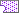

练习: 审阅界面
目标
成功完成此练习后，您将能够：
- 定义约束。
- 定义温度载荷。
- 定义界面。
- 定义并运行分析。
- 创建结果窗口。
假定背景
在本练习中，将会探究如图所示的焊缝在其已冷却至 100° K 后所出现的变形。此外，还会在冲压机处发现垂直反作用力。
该模型是连接在一起的元件的装配 (没有偏移)。曲面已连接，因此，公用有限元节点应位于零件相接触之处。

在本练习中，仅使用模型的八分之一。载荷、材料和约束是对称的。
“关闭窗口”(Close Window) “拭除未显示的”(Erase Not Displayed)
 Simulate_Modeling\Interfaces
Simulate_Modeling\Interfaces
 WELDED_JOINT_B.ASM
WELDED_JOINT_B.ASM
-
任务 1. 调查模型属性。
1. 单击“文件”(File) > “准备”(Prepare) > “模型属性”(Model Properties)。将出现“模型属性”(Model Properties) 对话框。
2. 审阅模型中所使用的单位。要关闭“模型属性”(Model Properties) 对话框，单击“关闭”(Close)。
3. 在模型树中，展开“材料”(Materials)。右键单击 ALUMINUM，然后选择“编辑定义”(Edit Definition)。将出现“材料定义”(Material Definition) 对话框。
4. 查看杨氏模量 (E) 值和泊松比值。您正在模型中定义温度更改，因此请确保已定义热膨胀系数。单击“确定”(Ok) 以关闭“材料定义”(Material Definition) 对话框。
-
任务 2. 定义约束。

由于模型已被出于对称度的原因进行了切割，因此必须约束曲面以模拟缺少的几何。也必须定义 Creo Simulate 约束以模拟结构的约束方式。
定义对称约束。这些约束是模拟缺少的几何的镜像约束和曲面约束的组合。所有这些约束都是在结构上共同作用的相同集的一部分。
1. 在功能区中，选择“主页”(Home) 选项卡。
2. 单击“约束”(Constraints) 组下拉菜单并选择“对称”(Symmetry)
 。将出现“对称约束”(Symmetry Constraint) 对话框。
。将出现“对称约束”(Symmetry Constraint) 对话框。
3. 按住 CTRL 键选择所示的三个曲面。
4. 这三个曲面将列在如图所示的对话框的选择部分。单击“确定”(OK)。
5. 在功能区中，选择“主页”(Home) 选项卡。
6. 在“约束”(Constraints) 组中单击“位移”(Displacement)
 。将出现“约束”(Constraint) 对话框。
。将出现“约束”(Constraint) 对话框。
7. 按住 CTRL 键选择所示的三个曲面。这三个曲面将显示在选择部分。
8. 完成如图所示的对话框的其余部分。
9. 单击“确定”(OK) 关闭“约束”(Constraint) 对话框。
10. 在功能区中，选择“主页”(Home) 选项卡。
11. 在“约束”(Constraints) 组中单击“位移”(Displacement)
。将出现“约束”(Constraint) 对话框。
12. 选择所示的曲面。该曲面将显示在选择部分。
13. 完成如图所示的对话框的其余部分。
14. 单击“确定”(OK) 关闭“约束”(Constraint) 对话框。
15. 在功能区中，选择“主页”(Home) 选项卡。
16. 在“约束”(Constraints) 组中单击“位移”(Displacement)
。将出现“约束”(Constraint) 对话框。
17. 选择所示的曲面。该曲面将显示在选择部分。
18. 完成如图所示的对话框的其余部分。
19. 单击“确定”(OK) 关闭“约束”(Constraint) 对话框。
-
任务 3. 网格化模型。
1. 在功能区中，选择“精细模型”(Refine Model) 选项卡。
2. 在 AutoGEM 组中从“控制类型”(Control Types) 下拉菜单中选择“最大元素尺寸”(Maximum Element Size)
 。将出现“最大元素尺寸控制”(Maximum Element Size Control) 对话框。
。将出现“最大元素尺寸控制”(Maximum Element Size Control) 对话框。
3. 在“参考”(References) 部分中，从下拉菜单中选择“分量”(Components)。
4. 在模型树中，按住 CTRL 键并选择 PLATE.PRT 和 STAMP.PRT。
5. 在“元素尺寸”(Element Size) 字段中键入 15。
6. 单击“确定”(OK)。
7. 从 AutoGEM 组中单击AutoGEM 。将出现 AutoGEM 对话框。
8. 单击“创建”(Create)。网格已被创建，如图所示。
9. 检查网格并注意公共节点是在相关零件的曲面相接触之处创建的。
10. 在所有对话框中单击“关闭”(Close) 以返回到 AutoGEM 对话框。
11. 在 AutoGEM 对话框中，单击“关闭”(Close)。
12. 提示保存网格时单击“否”(No)。
-
任务 4. 定义温度载荷。
1. 在功能区中，选择“主页”(Home) 选项卡。
2. 在“载荷”(Loads) 组中单击“温度”(Temperature)。将出现“结构温度载荷”(Structural Temperature Load) 对话框。
3. 在模型树中，选择 WELDED_JOINT_B.ASM。这会将载荷应用于整个系统。
4. 完成对话框的其余部分，如下所示：
- 在“空间变化”(Spatial Variation) 字段中，保持默认选择：“统一”(Uniform)。
- 在“值”(Value) 字段中键入 0。
- 在“参考温度”(Reference Temperature) 字段中键入 100。
5. 单击“确定”(OK)。
-
任务 5. 定义合力测量。
1. 在功能区中，选择“主页”(Home) 选项卡。
2. 在“运行”(Run) 组中单击“测量”(Measures)
 。将出现“测量”(Measures) 对话框。
。将出现“测量”(Measures) 对话框。
3. 单击“新建”(New)。将出现“测量定义”(Measure Definition) 对话框。
4. 完成“测量定义”(Measure Definition) 对话框，如图所示。在“空间评估”(Spatial Evaluation) 部分中选择“曲面”(Surfaces) 后，单击“选择参考”(Select Reference) 并在模型中选择“曲面:F8(REVOLVE_1):STAMP”(Surf:F8(REVOLVE_1):STAMP)。
5. 单击“确定”(OK) 返回到“测量”(Measures) 对话框。
6. 单击“关闭”(Close)。

-
任务 6. 定义并运行静态分析。
1. 在功能区中，选择“主页”(Home) 选项卡。
2. 在“运行”(Run) 组中单击“分析和研究”(Analyses and Studies)
 。将出现“分析和设计研究”(Analyses and Design Studies) 对话框。
。将出现“分析和设计研究”(Analyses and Design Studies) 对话框。
3. 单击“文件”(File) > “新建静态分析”(New Static)。将出现“静态分析定义”(Static Analysis Definition) 对话框。
4. 在“名称”(Name) 字段中键入 Welded_Joint。保持所有其他默认设置。
5. 单击“确定”(OK)。
6. 选择刚刚定义的分析 Welded_Join，然后单击“开始运行”(Start Run)
 。
。
7. 单击“是”(Yes) 以运行交互诊断。
8. 单击“显示研究状况”(Display Study Status)
 以监视分析进度。
以监视分析进度。
9. 检查显示在“运行状况”(Run Status) 对话框中的信息。标识最大位移模。同样，在摘要文件中标识已定义的合成测量 Reaction_Y。
10. 在“运行状况”(Run Status) 对话框中，单击“关闭”(Close)。
11. 在“诊断”(Diagnostics) 对话框中，单击“关闭”(Close)。
-
任务 7. 创建结果窗口并检查结果。
1. 单击“结果”(Results) > “定义结果窗口”(Define Result Window)。将出现“结果窗口定义”(Result Window Definition) 对话框。
2. 完成如图所示的对话框以显示最大位移量级的条纹图。
3. 单击“确定并显示”(OK and Show)。
4. 审阅出图。检查变形并注意板在整个几何中是连接的。
5. 单击“文件”(File) > “退出结果”(Exit Results)。
6. 在系统提示您保存当前结果窗口时，单击“否”(No)。
7. 在“分析和设计研究”(Analyses and Design Studies) 对话框中，单击“关闭”(Close)。
-
任务 8. 定义自由界面连接。
在先前的任务中，已假定板在其成对出现之处是完全连接的。而实际上，只有焊缝将板固定在一起。由于其只是在焊缝处进行连接，因此冲压机和板可以分离。
在下一个任务中，您将断开此连接的界面，对模型重新网格化，并会看到公共节点将不会再在面成对出现之处进行创建。此外，在零件被允许分离时，检查新结果。先前定义的其他所有设置将保持不变。
1. 在功能区中，选择“精细模型”(Refine Model) 选项卡。
2. 从“连接”(Connections) 组中单击“界面”(Interface)
 。将出现“界面定义”(Interface Definition) 对话框。
。将出现“界面定义”(Interface Definition) 对话框。
3. 完成对话框，如图所示。对于这两个曲面参考，以任何顺序选择 PLATE.PRT 的顶部曲面和 STAMP.PRT 的底部曲面。
4. 单击“确定”(OK)。

-
任务 9. 对模型重新网格化。
1. 在功能区中，选择“精细模型”(Refine Model) 选项卡。
2. 从 AutoGEM 组中单击AutoGEM 。将出现 AutoGEM 对话框。
3. 单击“创建”(Create)。网格已被创建，如图所示。
4. 检查网格并注意没有公用节点在所包含零件的共享自由界面连接的曲面上被创建。在其他地方有公用节点。
5. 在所有对话框中单击“关闭”(Close) 以返回到 AutoGEM 对话框。
6. 在 AutoGEM 对话框中，单击“关闭”(Close)。
7. 提示保存网格时单击“否”(No)。
-
任务 10. 定义并运行新的静态分析。
1. 在功能区中，选择“主页”(Home) 选项卡。
2. 在“运行”(Run) 组中单击“分析和研究”(Analyses and Studies)
。将出现“分析和设计研究”(Analyses and Design Studies) 对话框。
3. 单击“文件”(File) > “新建静态分析”(New Static)。将出现“静态分析定义”(Static Analysis Definition) 对话框。
4. 在“名称”(Name) 字段中键入 Welded_Joint_Free。保持所有其他默认设置。
5. 单击“确定”(OK)。
6. 选择刚定义的“分析”(Analysis)，然后单击“开始运行”(Start Run)
。
7. 单击“是”(Yes) 以运行交互诊断。
8. 单击“显示研究状况”(Display Study Status)
以监视分析进度。
9. 检查显示在“运行状况”(Run Status) 对话框中的信息。标识最大位移模。同样，在摘要文件中标识已定义的合成测量 Reaction_Y。
10. 在“运行状况”(Run Status) 对话框中，单击“关闭”(Close)。
11. 在“诊断”(Diagnostics) 对话框中，单击“关闭”(Close)。
-
任务 11. 创建结果窗口并检查结果。
1. 单击“结果”(Results) > “定义结果窗口”(Define Result Window)。将出现“结果窗口定义”(Result Window Definition) 对话框。
2. 选择“数量”(Quantity) 选项卡。完成对话框，如图所示。
3. 选择“显示选项”(Display Options) 选项卡。完成以下步骤：
- 选择“已变形”(Deformed)。
4. 单击“确定并显示”(OK and Show)。
5. 审阅出图。检查变形并注意板被焊接连在一起。

6. 单击“文件”(File) > “退出结果”(Exit Results)。
7. 在系统提示您保存当前结果窗口时，单击“否”(No)。
8. 在“分析和设计研究”(Analyses and Design Studies) 对话框中，单击“关闭”(Close)。
9. 单击“文件”(File) > “管理会话”(Manage Session) > “拭除当前”(Erase Current)。
10. 单击“确定”(OK) 以响应“拭除确认”(Erase Confirm) 提示。
练习就此结束。